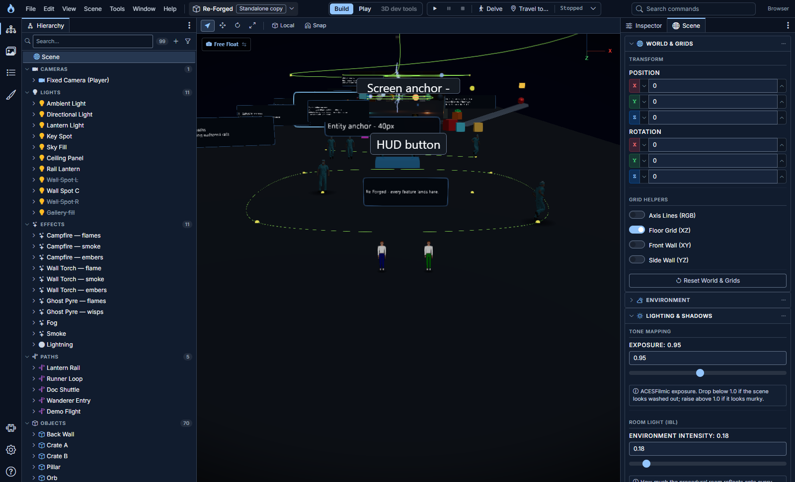
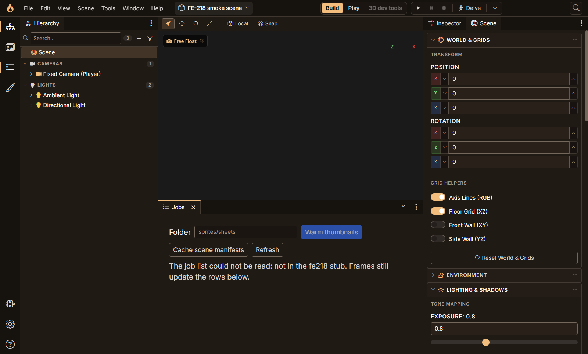
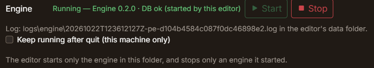
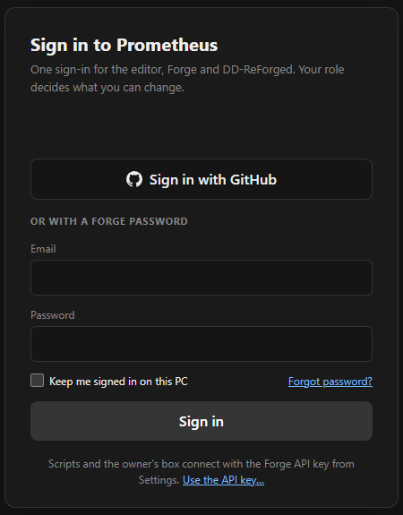
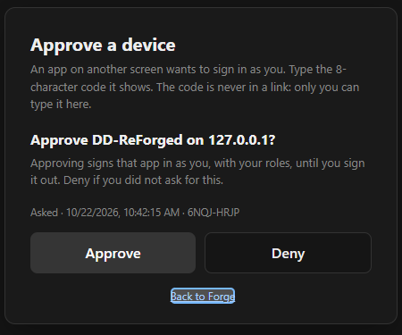

The shell, the engine and a front door
Contents
Yesterday the code for the rebuild started. Today three pieces of it came together, and the team got a new build of the git tool.
The shell is built


The frame from the design round is now the real editor: a title bar with the menus, the scene switcher, the mode switch and the transport (play, pause, stop) in the middle, and a command palette on the right. Press the search box and you can run any command the editor or a plugin offers.
The bigger change is how panels dock. The Hierarchy sits in a zone on the left and the Inspector in a zone on the right. Tool windows can dock into a zone as tabs or float, and a bottom zone holds wide panels.


Jobs, the server-side job list, now lives there. When the window gets small the left zone folds into a flyout and the bottom zone shrinks, while the right zone holds on longest. If a panel would not fit anywhere, the editor tells you instead of quietly hiding it. A fresh install opens with the Hierarchy left and the Inspector right, and Reset layout in Settings puts you back there in one click. Splitters work from the keyboard too.
Before any of this was called done, I ran the whole shell against my real scene in the browser, read-only. It passed, and it also found two real bugs: the editor could open on a theme that had been retired, and Space on a focused switch did nothing. Both were fixed the same night.
The desktop editor runs its own engine
The desktop editor used to need a backend started by hand. Now Settings has an Engine section: point it at the engine's folder, press Start, and the editor checks that the folder is the right one, that nothing already answers, and that the database is up, and only then starts the engine as a child process.


I ran it for real, against the real engine and database: about 6.6 seconds from pressing Start to "Running", and about 3 seconds from Stop to "Stopped" with the engine confirming it had flushed its scenes. Quitting the editor takes the engine with it.
There is an option to keep the engine running after the editor quits, and it had a Windows quirk worth a paragraph. A program started from another inherits every inheritable handle its parent holds, not only the three it was meant to get. A kept engine was therefore quietly holding on to the editor's own debugging socket after the editor had gone, so the next launch couldn't use it. The fix is a tiny launcher that starts the engine and passes it only the handful of pipes it needs. After the editor dies, it no longer owns anything.
Forge has a front door


Forge, the git manager, used to trust one shared key, so anyone who reached it was effectively me. That was fine for one person and wrong for a team. Forge now has people.
You can sign in with an email and password, or with GitHub. A new account gets a one-time password that must be changed on first use. Wrong passwords and unknown emails get the same answer, and repeated failures are rate-limited. The card shows when a key is still the shipped default, and refuses to run until it is changed.
GitHub here means identity, not git access. When you sign in, Forge reads your GitHub id and your primary verified email, then throws the token away. It is never stored and never logged. That matches the rule I'm building toward for the team: a teammate should only ever see the repos their own GitHub account can reach, never mine through my token, and nothing of theirs should sit on my server. The sign-in half is done; the repo-visibility half is still ahead.
Desktop apps have no browser cookie, so DD-ReForged and the editor use a device flow. The app asks Forge for a short code and shows it, you open Forge in your browser, type the code and approve.


The code is never put in a link, so a phishing message can't carry it. The page names the app and where the request came from, and the shared key cannot approve a device. Only a signed-in person can.
DD-ReForged 0.3.2, for the team
The review build for the team is 0.3.2, with a matching VS Code extension. It stops Settings saves from restarting the local agent unless a setting the agent actually reads has changed, makes a restart wait up to 30 seconds for a busy agent, and keeps a redacted log per profile. Building it found that the agent change had broken the packaged app in a way the tests hadn't caught, so that was fixed and guarded before it went out.
Next
The repo-visibility rule for the team, then the desktop editor's remaining slices.